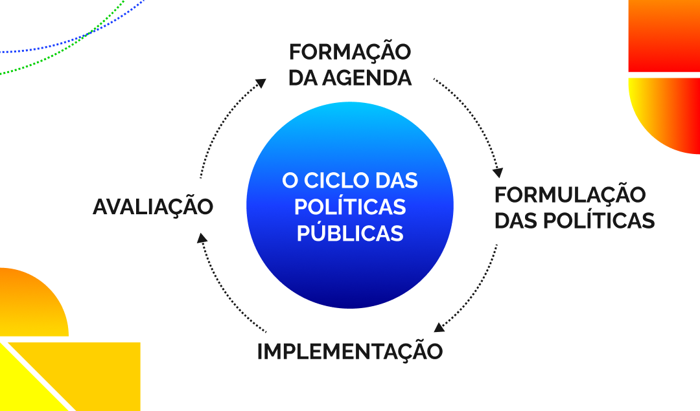
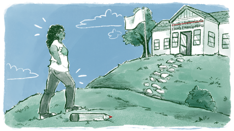

A perspectiva crítica de análise das políticas públicas
As políticas públicas têm sido analisadas segundo diversas perspectivas, cada uma expressando uma visão sobre a sociedade, o Estado e as suas relações. Todas estas abordagens contribuem de alguma maneira para a apreensão da complexidade das políticas públicas, com graus variados de possibilidades e limitações, incluindo os fatores que impactam sua implementação e efetividade social.
Elas podem focar nas dimensões quantitativas e na racionalidade econômica (análise de custo-benefício, eficiência e eficácia etc.), como a abordagem racional-positivista, na qual a elaboração é considerada a etapa central do processo, ou reconhecer que somente os “decisores” (pessoas ou grupos que detêm informação, conhecimento e capacidade de articulá-los) podem encontrar a melhor saída disponível, como a abordagem da racionalidade limitada; ou, ainda, como o incrementalismo, pode-se considerar que dada a influência da política e dos valores na formulação de políticas, ao invés de transformações profundas, elas devem ser graduais, causando mudanças cumulativas.
Já a teoria do ótimo normativo considera a complexidade das questões e o fato das próprias políticas públicas influenciarem o interpretar, o compreender e o agir dos tomadores de decisão. De forma complementar, a análise de estilos políticos, por sua vez, foca na governança, em suas diferentes formas e modelos e em como ela termina conformando a formulação e a implementação de políticas – ao mesmo tempo que valoriza a cultura política e os contextos sociais como determinantes nas decisões políticas. Por outro lado, a abordagem de Advocacy Coalition Framework (ACF) considera que os diferentes grupos sociais organizam coalizões de defesa, que têm crenças em comum e se articulam para promover agendas próprias, imprimindo seu “DNA” na formulação e implementação das políticas.
Muito utilizada na análise das políticas públicas educacionais, a abordagem do ciclo de políticas vê um ciclo que inclui agenda, formulação, implementação e avaliação, sendo que cada etapa tem dependência recíproca com as demais, influenciando-as mutuamente e permitindo uma compreensão mais dinâmica por meio da análise da trajetória de políticas ou programas educacionais com base nos cinco contextos: contexto de influência, contexto da produção de texto, contexto da prática, contexto dos resultados/efeitos e contexto de estratégia política.

Título: O ciclo das políticas públicas
Fonte: Prosa (2024g).
No sentido de superar as deficiências das abordagens tradicionais de análise de políticas públicas, e também de sermos coerentes com a discussão feita até aqui, optamos pela perspectiva crítica de análise das políticas públicas, que valoriza o debate público e a articulação dos conceitos com a realidade concreta, permitindo interpretações acuradas acerca do papel dessas políticas e suas relações com as mudanças sociais.
Uma abordagem crítica contribui para explicitar questões complexas e propor alternativas para além da camisa de força dos modelos, levando em consideração o contexto (conflitos, dificuldades no plano econômico e político e demandas dos grupos sociais, por exemplo), a diversidade dos grupos subalternos e o seu histórico de lutas pela política pública, a influência da mídia na opinião pública, as suas funções e os impactos desejados e possíveis. Pressupõe também que os agentes públicos tenham formação e informação sobre as políticas que estão elaborando, executando ou avaliando.
A perspectiva crítica analisa como as políticas públicas (expressão de interesses dos diferentes grupos da sociedade) podem perpetuar ou enfrentar as desigualdades sociais, não apenas garantindo direitos, mas empoderando os grupos subalternos, até mesmo em sua diversidade, considerando as dimensões de gênero, étnico-raciais etc. Essa perspectiva também alerta para os efeitos não explícitos e/ou colaterais que prejudicam estes grupos, propondo alternativas mais adequadas. Por exemplo: as políticas que envolvem inovações tecnológicas (entre elas as aplicadas à educação) não podem prescindir de uma análise dos impactos sobre o trabalho (intensidade, relações de trabalho e qualificação) e a estrutura social.
Como se afirmou anteriormente, as políticas públicas devem ser analisadas como instrumentos que reforçam ou enfraquecem a hegemonia cultural. Ao incluir as vozes dos grupos subalternos através da participação e do controle social – dando visibilidade às suas necessidades, aos seus valores e cultura –, as políticas públicas podem contribuir para criar uma nova hegemonia, ou pelo menos contestar a vigente. Isso significa não apenas revelar e eximir os resultados práticos, mas também, a partir das dimensões ideológicas e culturais, promover mudanças sociais.

Título: A conquista de uma nova hegemonia
Fonte: Prosa (2024h).
A adoção de perspectivas hegemônicas ou contra-hegemônicas na implementação das políticas públicas vai depender da correlação de força dos sujeitos coletivos que atuam no espaço social onde a luta ocorre: o território.